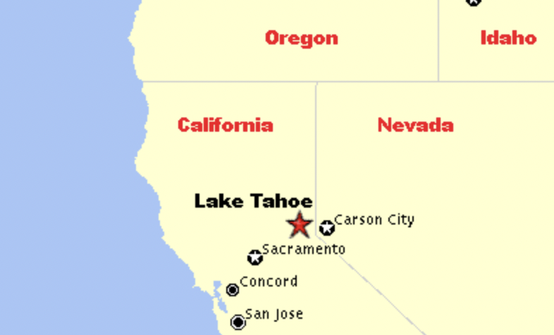

Places I've Visited

I don't really travel, but one place I've been to is Las Vegas, Nevada. We went there for New Year's Eve back in 2018, and we had a lot of fun walking around, exploring the Strip, and watching shows.
Another place I've been to is Lake Tahoe, which is situated near the border of California and Nevada. It's a nice place to go to during the winter, as the snow makes for a lot of nice sights and for fun sledding!
Places I Want To Visit
I haven't travelled very much, but a few places I'd love to travel to are Spain, Italy, and Greece! I feel like those places have a lot of things to explore, such as interesting architectures, cultures, and cuisine!